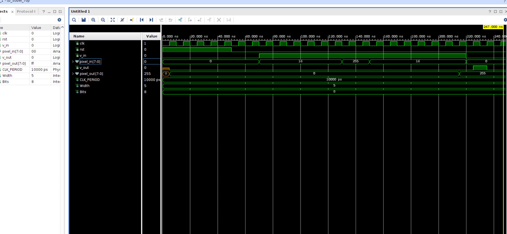
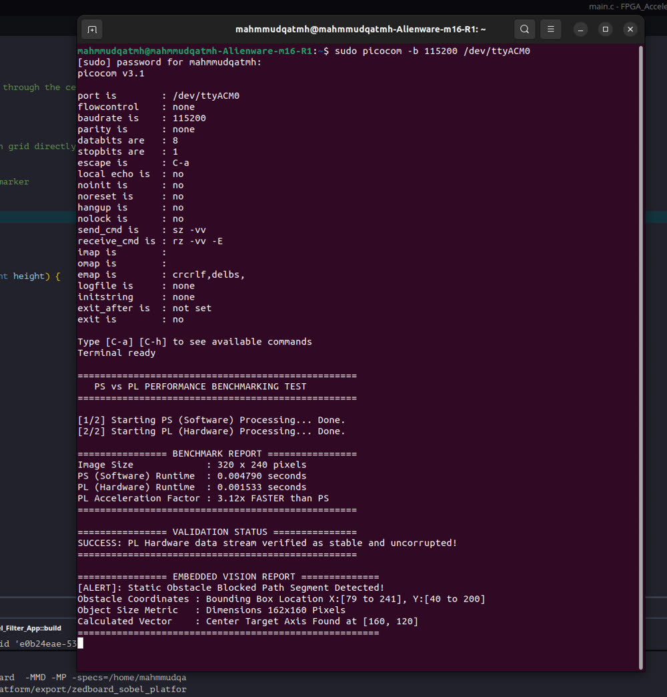

The idea
Robots must process camera data while also planning and controlling. Pixel-level work like edge detection is a bottleneck on a CPU. This project moves it into FPGA logic and leaves the ARM processor free for decisions, a hardware/software co-design on the Xilinx Zynq-7000.
Architecture
- DDR → FPGAAXI DMA streams each image frame from memory into the accelerator.
- Sobel accelerator (VHDL)A line buffer builds a rolling 3×3 window. The Sobel core computes horizontal and vertical gradients and thresholds the magnitude. An AXI4-Stream wrapper connects it to the DMA.
- FPGA → DDRThe edge map streams back to memory, with cache flush and invalidate around every transfer.
- ARM Cortex-A9Software finds the target's boundaries, size and centre, and flags obstacles.
Results
4.79 msSoftware only (ARM)
1.53 msFPGA accelerator
3.1×Faster
A synthetic test pattern verified that the DMA data path was stable and uncorrupted. On the target test image the system found the object (162 × 160 px, centre at 160, 120) and raised an obstacle alert for the blocked path segment.

